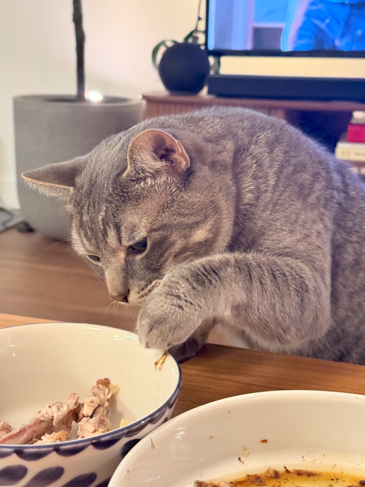
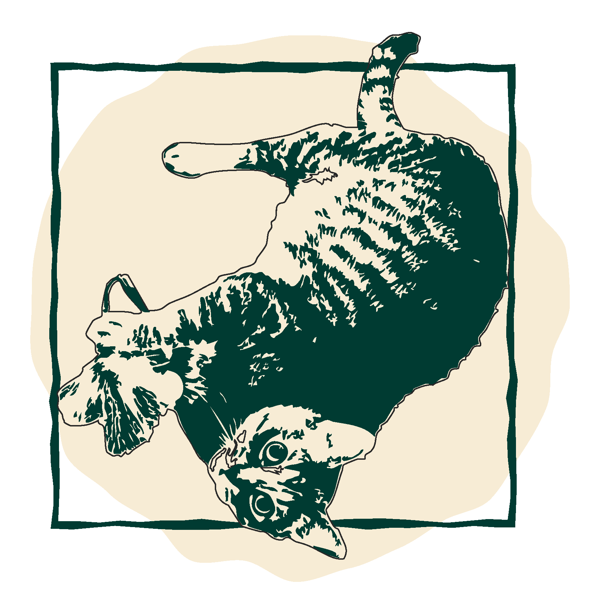
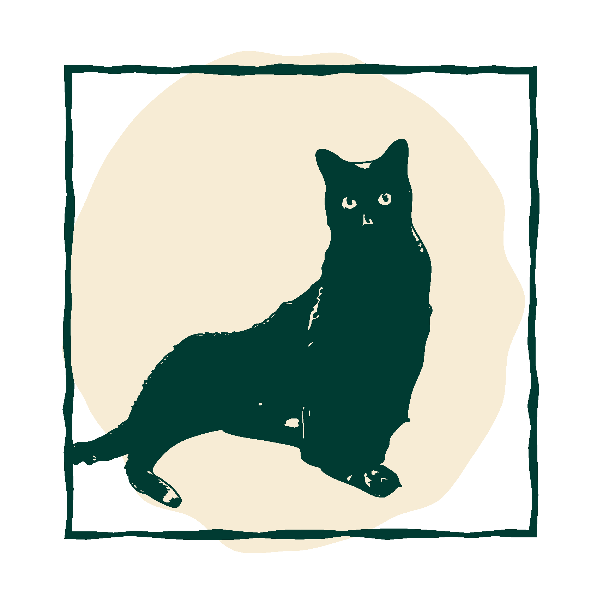
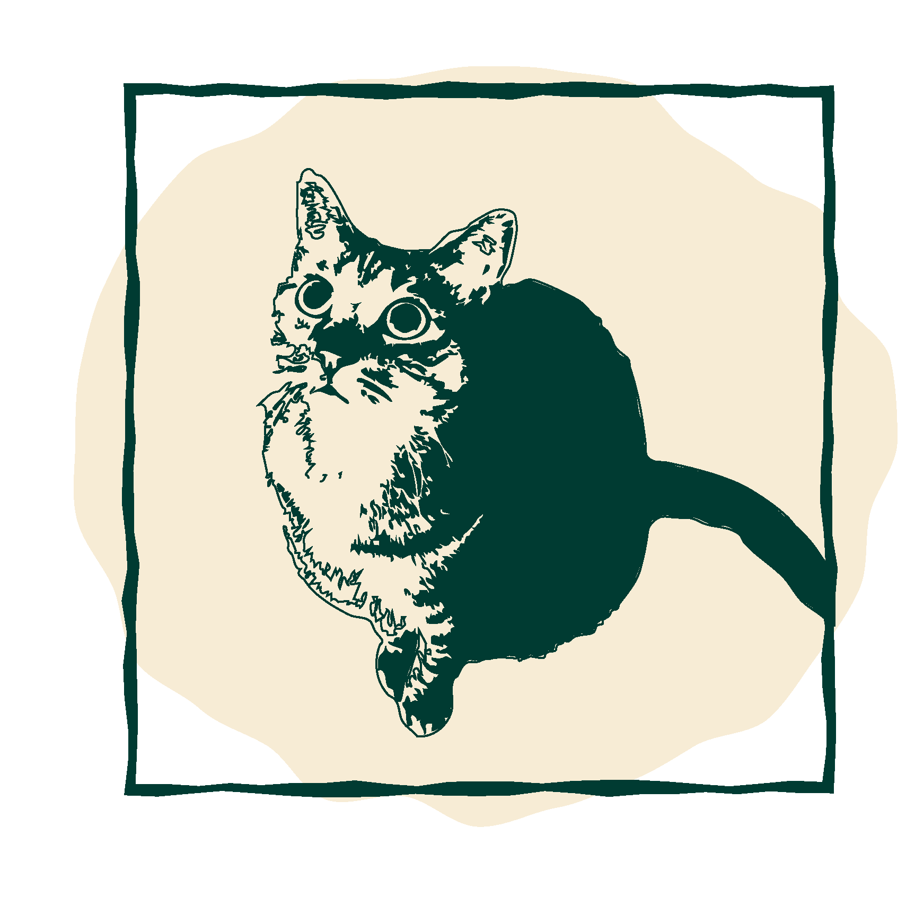
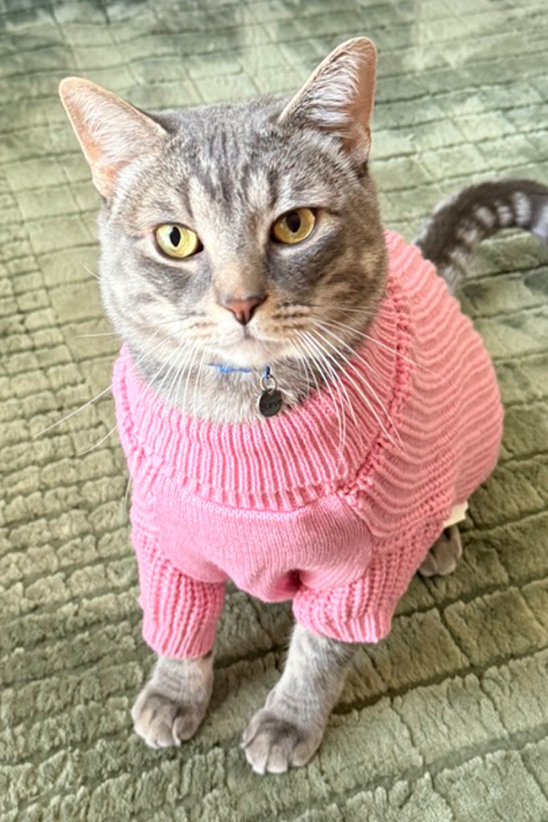
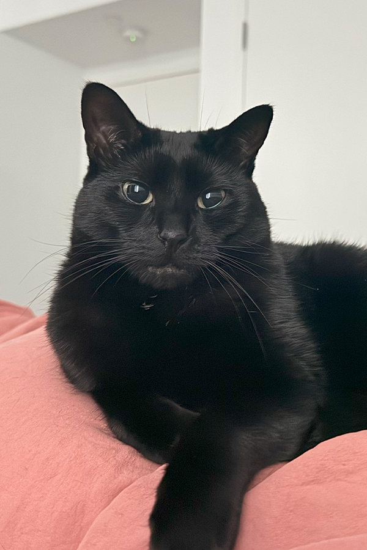
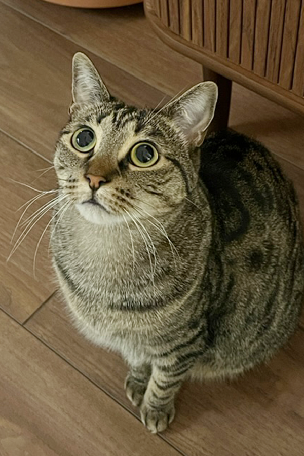
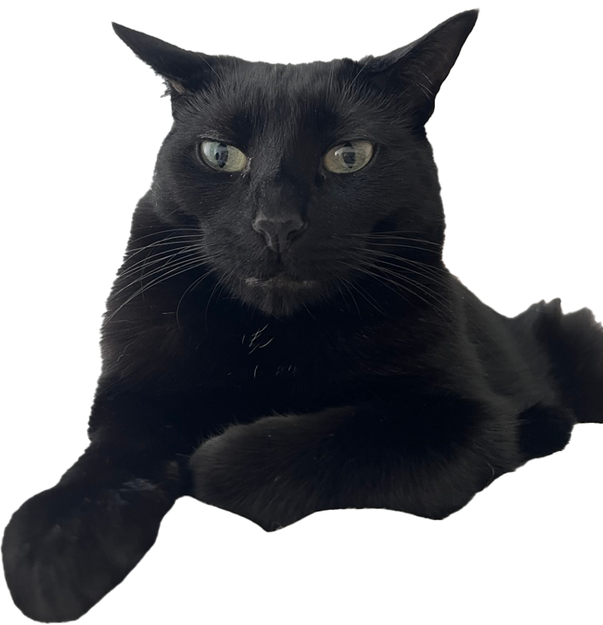
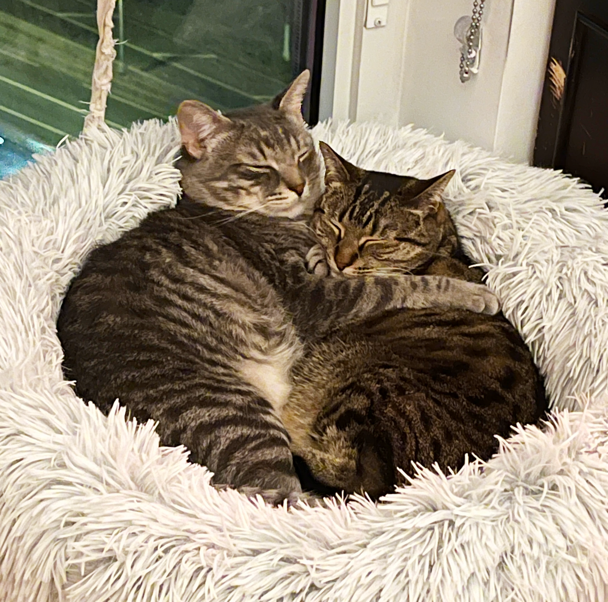

STEVE CAUGHT RED-PAWED AGAIN

Sources confirm Steve attempted a triple-bowl heist during dinner. Witnesses report zero remorse and one full belly.







Sources confirm Steve attempted a triple-bowl heist during dinner. Witnesses report zero remorse and one full belly.

"All I want is one night without Steve yelling about food or love."

Despite public scrutiny (mostly from Boba), the lovebirds remain inseparable. Spotted sharing snacks and synchronized naps.
Management (mom & dad) announced Steve will continue sleeping separately from Soba and Boba to "restore household harmony." The girls are reportedly "thrilled."
*This website was built under feline supervision